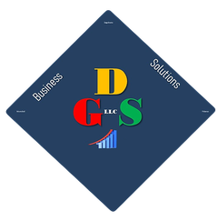

Inversiones y retiro
Cuando ya estás libre de deudas de consumo, tienes tu fondo de emergencia completo y toca decidir en qué invertir.
Qué credencial verifico: Asesor de inversiones registrado (IAR/RIA) o CFP®. Verificable en adviserinfo.sec.gov.
Estamos incorporando aliados en esta área. Escríbenos y te orientamos.
Hipotecas
Cuando ya estás listo para precalificar y necesitas comparar opciones reales.
Qué credencial verifico: Oficial de préstamos con licencia NMLS. Verificable en NMLS Consumer Access.
Estamos incorporando aliados en esta área. Escríbenos y te orientamos.
Bienes raíces
Cuando ya tienes la entrada ahorrada y sales a buscar casa.
Qué credencial verifico: Agente con licencia estatal, con experiencia en compradores por primera vez.
Estamos incorporando aliados en esta área. Escríbenos y te orientamos.
Impuestos
Si trabajas por cuenta propia, tienes ITIN, debes dinero al IRS o necesitas un plan de pagos.
Qué credencial verifico: Preparador de impuestos con PTIN vigente; CPA o Enrolled Agent para los casos que lo requieran.
-

DGS Business Solutions
Income tax (personal, LLC y corporativo), bookkeeping, payroll y apertura de negocio. También traducciones y trámites migratorios con equipo paralegal; los casos que requieren un abogado se refieren al abogado de inmigración Franklin S. Montero (Clifton, NJ) · Fair Lawn y Freehold, NJ · Español e inglés
WhatsApp
Correo
Seguros
Cuando necesitas proteger a tu familia: vida a término, discapacidad, salud, auto y hogar.
Qué credencial verifico: Agente independiente con licencia estatal de seguros.
-
DGS Medicare Consultants
Corredores de seguros de salud con licencia: Medicare, GetCoveredNJ, discapacidad y menores de 65 años · Fair Lawn y Freehold, NJ · Español e inglés
WhatsApp
Correo
Asuntos legales
Demandas de cobranza, embargo de salario, bancarrota, contratos.
Qué credencial verifico: Abogado con licencia activa en tu estado. Verificable con el colegio de abogados estatal.
Estamos incorporando aliados en esta área. Escríbenos y te orientamos.
Testamento y herencia
Cuando quieres dejar tu casa en orden para los tuyos.
Qué credencial verifico: Abogado de planificación patrimonial.
Estamos incorporando aliados en esta área. Escríbenos y te orientamos.
Inmigración
Cuando tu situación migratoria afecta tus decisiones de dinero, trabajo o crédito.
Qué credencial verifico: Abogado de inmigración o representante acreditado por el Departamento de Justicia. Nunca un notario público.
Estamos incorporando aliados en esta área. Escríbenos y te orientamos.
Salud emocional y familiar
Cuando detrás del gasto hay ansiedad, compra compulsiva, ludopatía o una crisis de pareja que va más allá del dinero.
Qué credencial verifico: Consejero o terapeuta con licencia estatal.
Estamos incorporando aliados en esta área. Escríbenos y te orientamos.